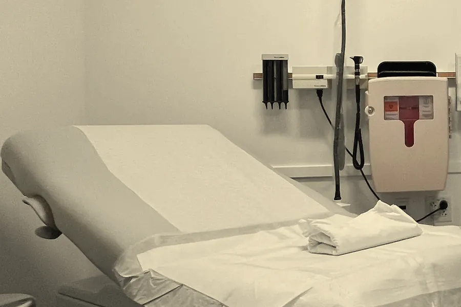

Care at Braeburn
Six kinds of visit, each with a stated length. If you are not sure which you need, call and ask.
- Dr Adaeze Okonjo, MDAccepting new patientsNext available: Week of the 18th
- Dr Martin Hollis, MDPanel closed — waitlist openWaitlist open
- Priya Raman, FNPAccepting new patientsNext available: This week
- Dr Tomas Vlček, DOAccepting new patients — children onlyNext available: Week of the 11th
What each visit involves
A first appointment for a new patient
40 minutes. You and your provider go through your history, your medicines and your records so far. You agree what happens next. This is an in-person visit.
Ongoing care for a long-term condition
20 minutes. You see the same provider at a pace you agree, with time to go over results and prescriptions. Some follow-ups can be by video.
A short-notice appointment for something new
15 minutes. One new concern, usually within the week. Call from 8:00 am. We hold a few slots each weekday and on Saturday mornings. This is not emergency care.
Well-child visits and school forms, from age two
20 minutes. Dr Vlček sees children from age two. A well-child visit covers height and weight, routine vaccinations if they are due, and time for your questions. Bring any school or camp forms and he completes them during the visit. We do not see children under two.
Contraception, sexual health and travel vaccinations
20 minutes. A private appointment with Priya Raman. Routine and travel vaccinations are given here. For travel, book at least six weeks before you leave, and bring your dates and destinations.
Annual wellness and Medicare annual visits
40 minutes. A yearly review of your records and what is due. Your provider will talk through anything that needs its own appointment.

Where we send you instead
Referrals usually go out within two working days.
- Urgent or emergency care
- Call 911 or go to your nearest emergency department. We will see you afterward and take over from there.
- Delivering babies
- Dr Okonjo shares pregnancy care with an obstetric practice you choose. We send the referral within two working days, and a first visit usually takes one to two weeks.
- Surgery, or procedures beyond minor office ones
- We refer you to a surgeon. Expect two to four weeks for a first appointment.
- Children under two
- We refer to a pediatric practice, usually within the week. We see children from age two.
- Long-term controlled-substance prescribing for pain
- We refer you to a specialist clinic. A first appointment usually takes four to eight weeks.
- Workers' compensation or legal assessments
- We can give you the name of an occupational health service. The wait is usually one to two weeks.
- Dr Adaeze Okonjo, MDAccepting new patientsNext available: Week of the 18th
- Dr Martin Hollis, MDPanel closed — waitlist openWaitlist open
- Priya Raman, FNPAccepting new patientsNext available: This week
- Dr Tomas Vlček, DOAccepting new patients — children onlyNext available: Week of the 11th
Rather talk to someone?(555) 555-0142
Choose your provider and book.
You will see who you pick. The front desk calls you back within one working day.
(555) 555-0142